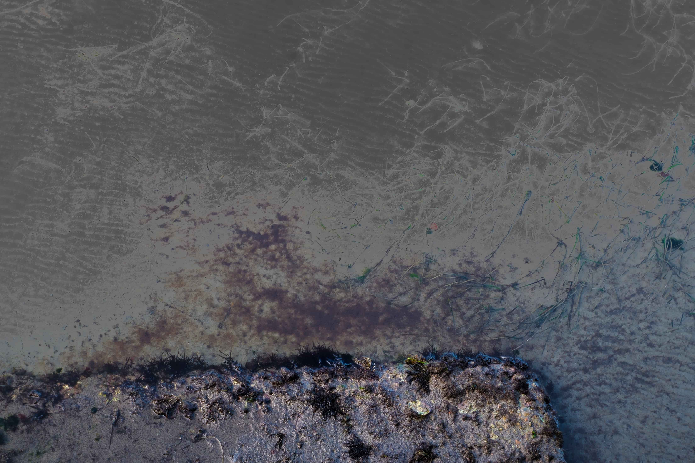
Fotografia · Paesaggio & Ritratto
Gallery
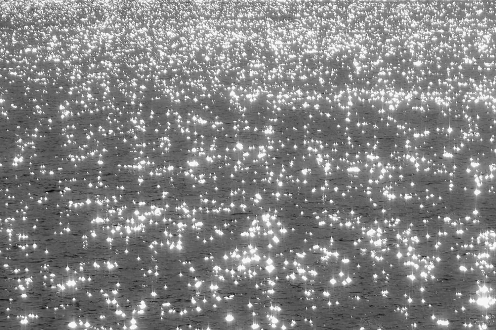
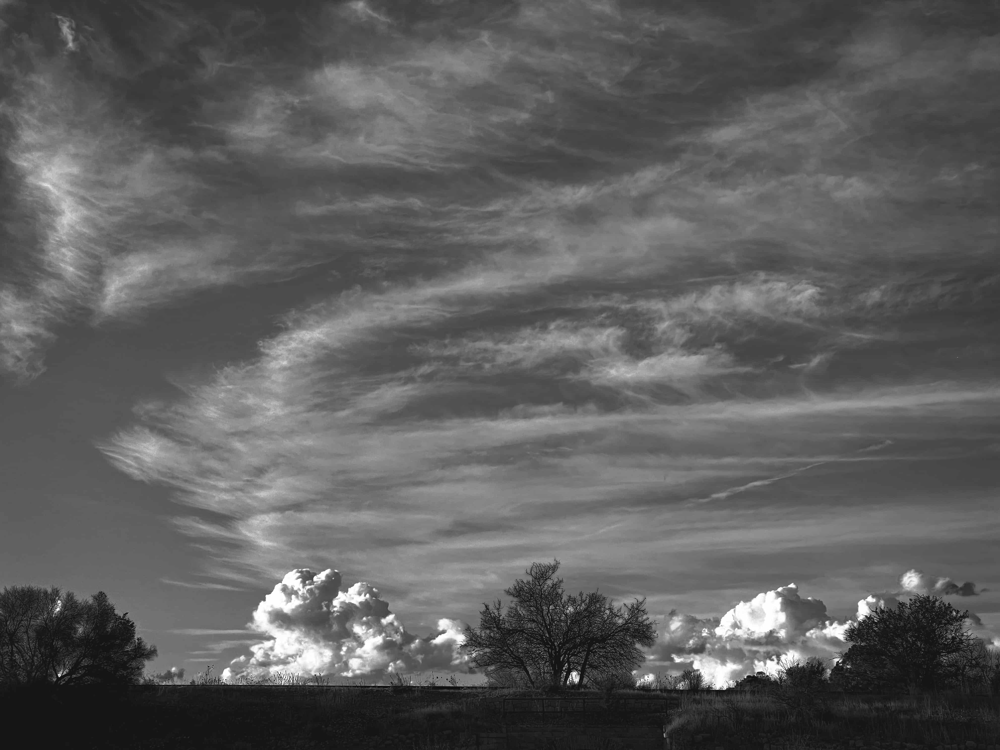
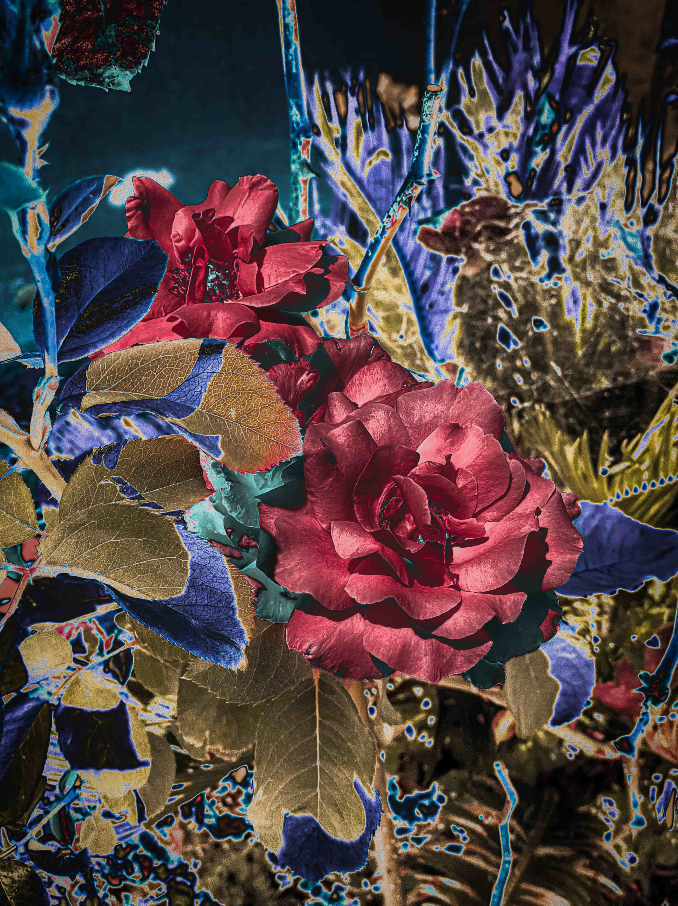
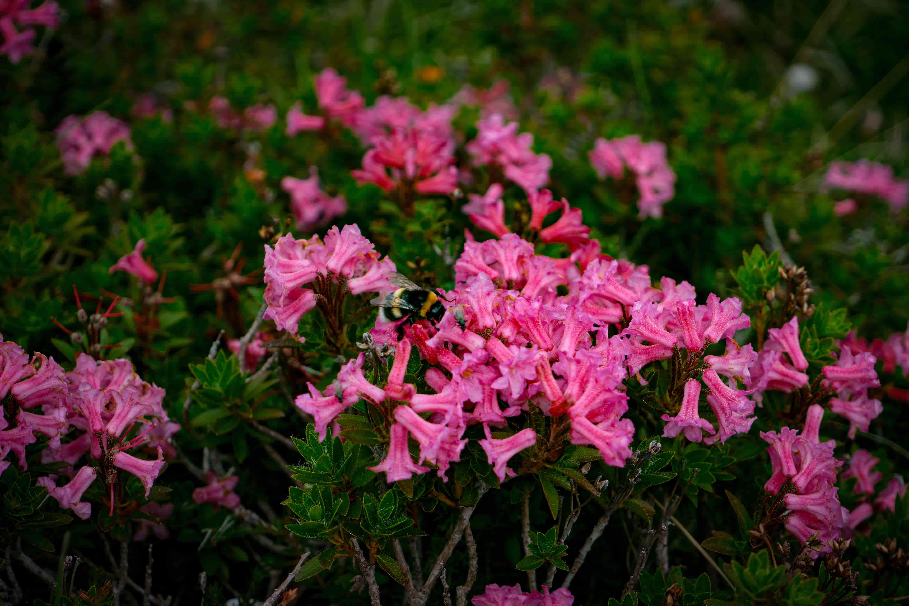
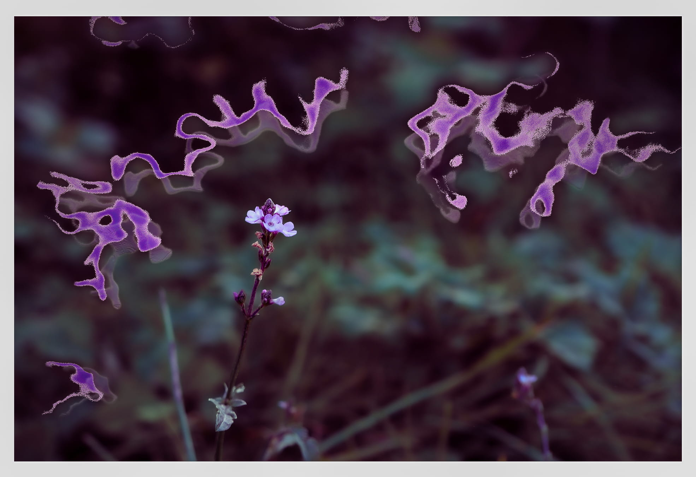
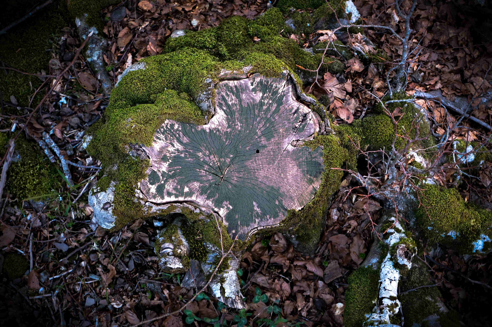
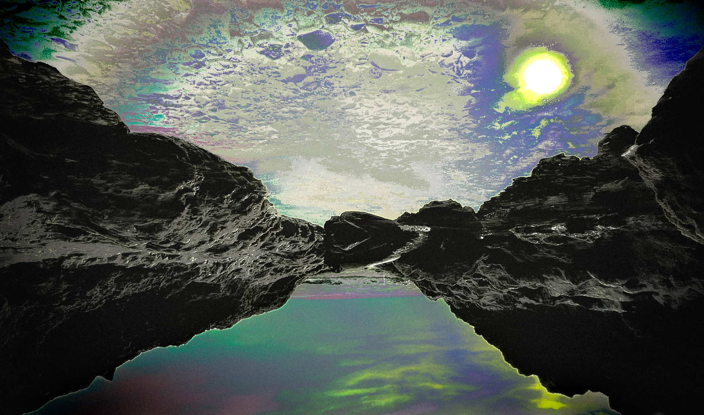
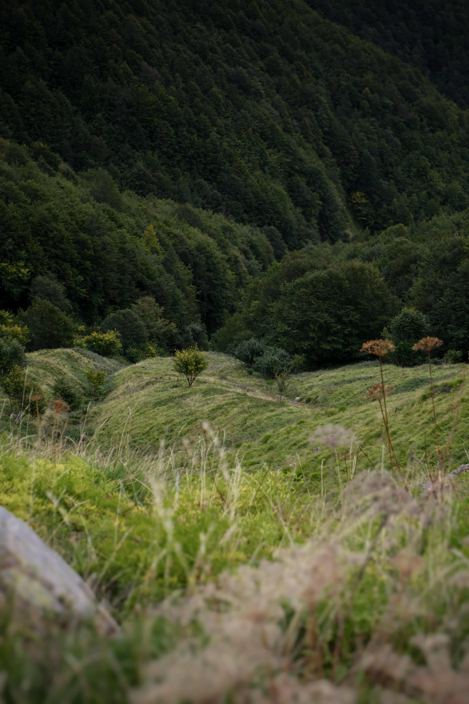
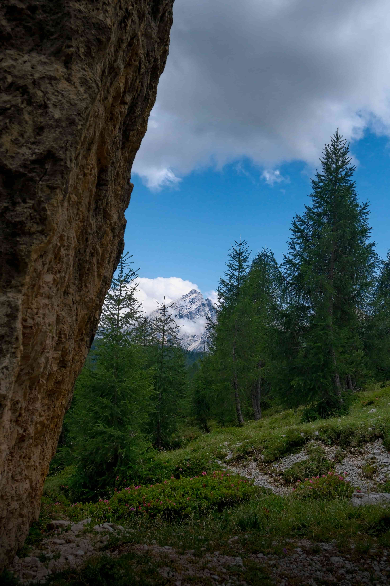
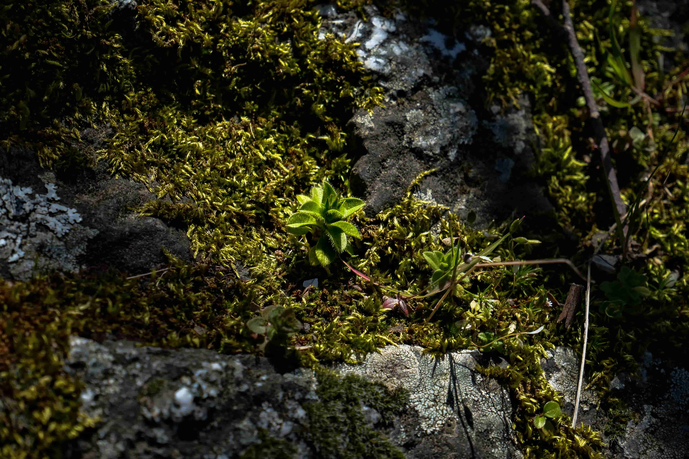
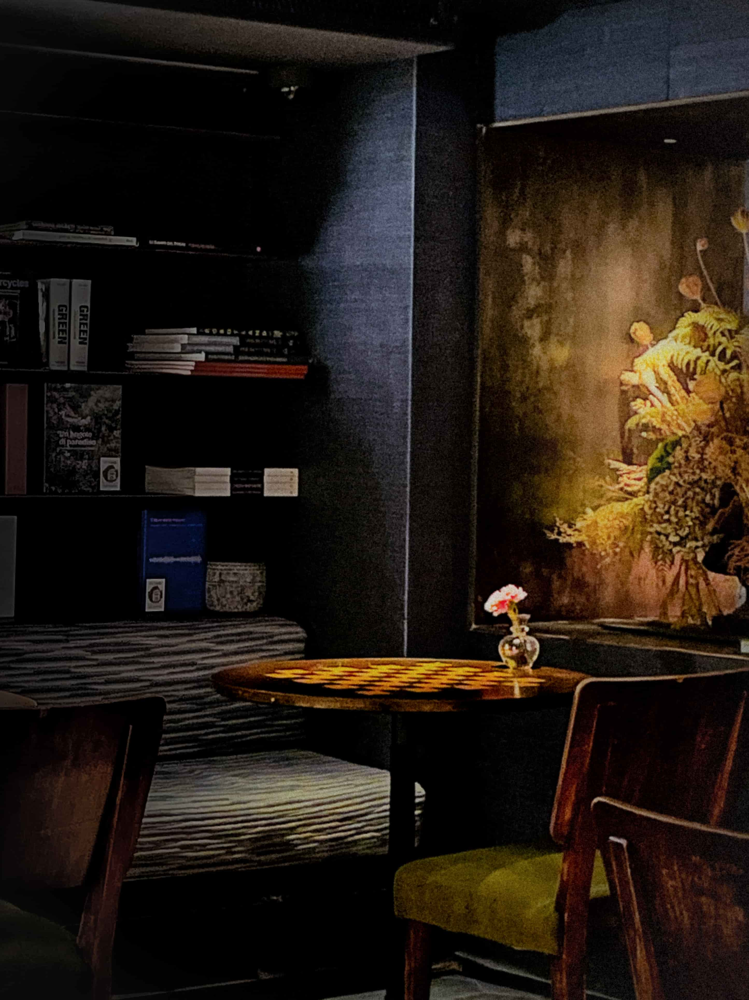
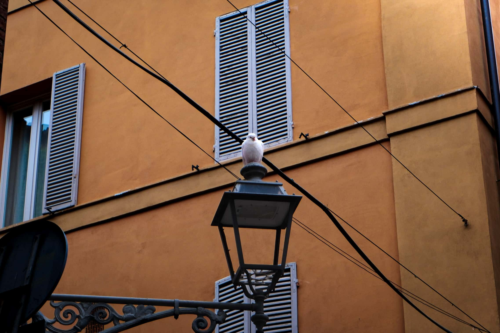
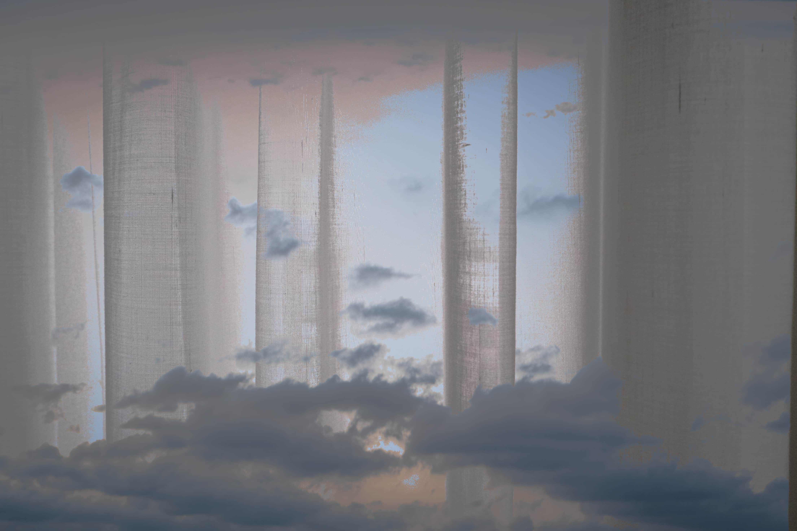
Biografia
Alessandro Lantone | Visual Artist & Photographer
Esplorazioni tra materia, astrazione naturale e surrealismo digitale
Esploro la sottile linea di confine tra organico e sintetico, tra la forma tangibile e la sua astrazione. La mia fotografia è una caccia costante a texture, riflessi e dettagli nascosti: trasformo elementi naturali, scenari urbani e frequenze luminose in visioni surreali, dove la realtà si dissolve per lasciare spazio a un'atmosfera onirica e materica.